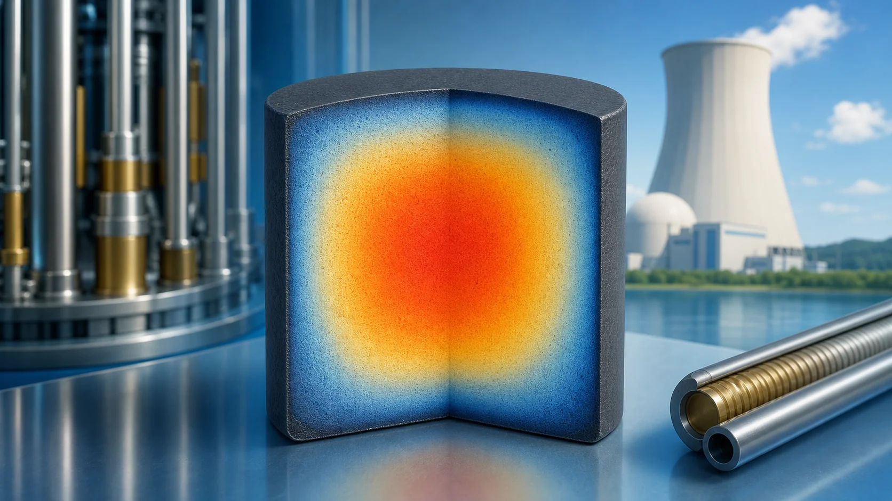
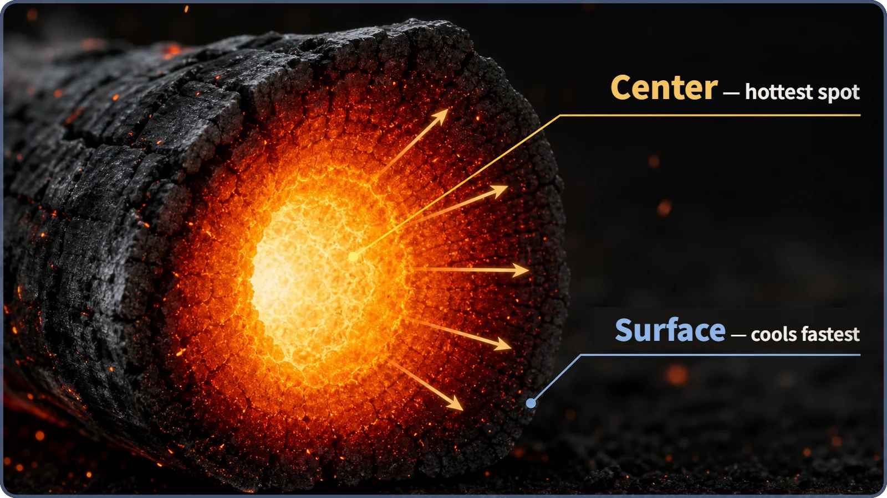
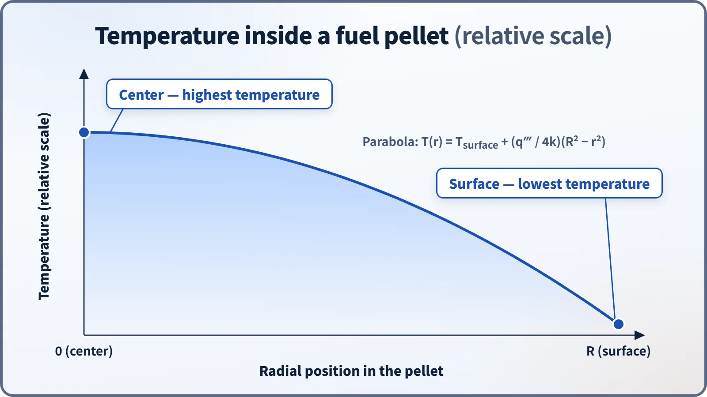

Heat Transfer & Thermal Hydraulics · 127
Why a Campfire Ember Stays Hot Inside — The Temperature Profile of a Fuel Pellet
Even heating, one exit: why the center of a fuel pellet is always its hottest point, and why that peak sets how hard a reactor can run.

Inside a fuel pellet, fission heat is produced almost evenly throughout the volume, but it can leave only through the surface. Heat from the center has the farthest to travel, so the temperature follows a parabola: highest at the center, lowest at the surface. The center-to-surface difference grows with more heat generation and lower thermal conductivity, and keeping that center peak well below the fuel's melting point is a key design and safety criterion.
Hot inside, bearable outside
Ever sat by a campfire until the logs burned down? The flames die away and you're left with chunks of black charcoal. Hold your hand near one and the outside feels bearable. But snap it open with a stick and the inside glows fierce red, close to white-hot. It's one and the same ember, so why are the inside and the outside so different?
The answer is surprisingly simple. The heat doesn't simply pour out of the whole ember evenly. The surface touches the cool outside air directly, so it loses heat fast. Heat from the inside, on the other hand, has to travel all the way to the surface before it can escape, so it can't get out fast enough and the core stays hot. The surface sits right next to the "heat exit"; the core is far from it. That difference in distance alone splits the temperature.
That same ember sits inside a reactor
We've seen before that fission heat is born right inside the fuel, not somewhere else. Now it's time to see what happens as that heat makes its way out. A reactor is packed with small cylindrical pellets of fuel, each about the size of a fingertip and less than 1 centimeter across. Small as they are, fission happens almost evenly throughout the whole pellet volume. Whether at the center, halfway out, or just inside the surface, the amount of heat produced at each spot is about the same.
But that heat has only one way out: through the pellet's surface to the coolant beyond. Heat made just inside the surface has almost no distance to travel and escapes quickly. Heat made at the very center has a relatively long way to go to reach the surface. Just like the heat inside the ember, heat from the pellet's center takes time and meets resistance on its way out. So if you slice a pellet across and measure the temperature along its radius, you find the center is hottest and the temperature falls toward the surface, in a smooth curve shaped like a hilltop: a parabola.

Don't mix this up: temperature is not the number of neutrons
If you've come across the curves that show where neutrons are more or less plentiful inside a reactor, you might think, "Isn't this the same picture?" It's a completely different story. That distribution describes how many neutrons are moving around across the whole core, a reactor several meters across. The temperature distribution we're talking about here describes how temperature changes inside a single fuel pellet, on a scale of millimeters. The physical quantity is different (neutron population vs. temperature), and so is the scale. They may look alike, but they're two separate concepts.
Another natural question: "If heat is produced evenly throughout the pellet, why isn't the temperature even?" Because although heat is produced evenly, the distance to the exit is different at every point, so the temperature isn't even. Even heating and even temperature are two different things.
A peek at the numbers
Written as an equation, this temperature distribution looks like this:
T(r) = T_surface + (q‴ ÷ 4k) × (R² − r²)
Don't let the symbols scare you. r is how far you are from the center, T(r) is the temperature at that point, T_surface is the temperature of the pellet surface, q‴ is the heat generated per unit volume (how vigorously heat is being made), k is the thermal conductivity (a number that says how well a material lets heat through), and R is the pellet radius.
The key takeaway: the temperature difference between center and surface grows larger as heat generation goes up, and as thermal conductivity goes down. And uranium dioxide (UO₂), the ceramic used as reactor fuel, happens to have a fairly low thermal conductivity compared with metals. So a fuel pellet is a material that keeps a sizable temperature difference between its center and its surface.

So why does this matter?
This parabolic temperature profile isn't just an interesting bit of physics, because the pellet center has to stay well below the temperature at which this ceramic fuel melts. A campfire ember can be as hot inside as it likes; a reactor fuel pellet can't. Designers calculate this parabolic profile in advance and set power limits with a generous margin, so that even when the reactor runs at its highest power, the pellet center never gets anywhere near the melting point. During operation, the reactor is kept within those limits. In other words, knowing this one temperature profile accurately underpins the design and safety criteria that decide how hard a reactor can be run.
Today in one breath
- Inside a fuel pellet, fission heat is produced almost evenly throughout the volume, but the heat has only one way out, the surface, so a parabolic temperature profile forms: hottest at the center, cooler toward the surface.
- It's the same principle as the inside and outside of a burned-down campfire ember: the surface loses heat quickly, while heat from the center needs distance and time to escape.
- This temperature profile is not the same idea as the neutron flux distribution across the whole reactor core.
- Keeping the peak of this parabola (the center temperature) well below the fuel's melting temperature is one of the key criteria of reactor design and safety.